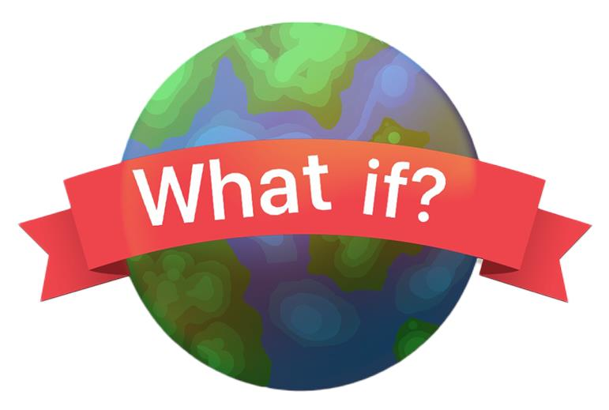

Over ons
Wie zijn wij?
Wij zijn drie nieuwsgierige denkers met een passie voor het verkennen van het onbekende. Met de What If podcast willen we niet alleen onze eigen verbeelding prikkelen, maar ook die van jou. Van historische wat-als-scenario's tot futuristische speculaties: wij brengen ze tot leven in onze speelse en uitdagende gesprekken.
Ons Doel
Met deze podcast willen wij de verbeelding en reflectie stimuleren bij de luisteraars. Het doel is om mensen te laten nadenken over de impact van keuzes en gebeurtenissen, zowel in persoonlijke levens als in bredere maatschappelijke contexten.